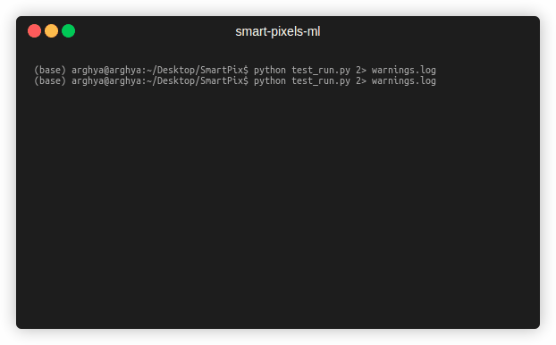
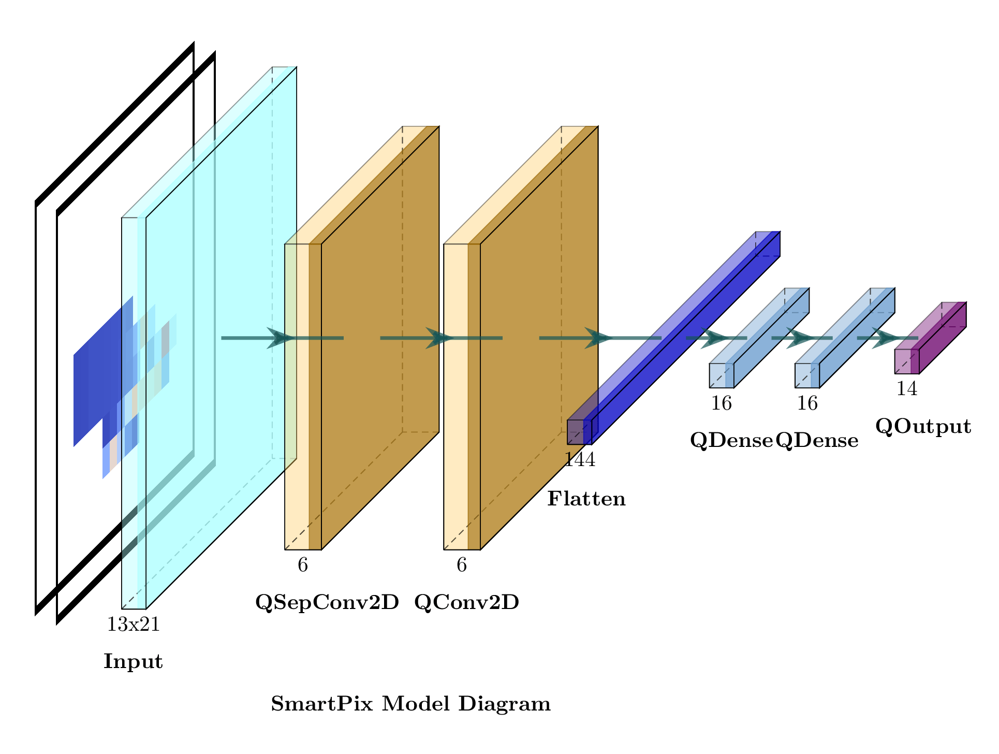

Smart Pixels (ML)#
Smart Pixels is a project focused on implementing machine learning models directly on silicon pixels or future detectors to enhance the inference of charged particle track parameters. We here use an MDN (Mixture Density Network) with one Gaussian. This model predicts the mean value of the target variable and the associated uncertainty to that prediction, with NLL (Negative Log-likelihood Loss) as the loss function to minimize.
Table of Contents#
- Getting Started
- Installation
- Usage
- Dataset
- Structure
- Data Visualization
- Data Generator
- Testing
- Model Architecture
- Model Evaluation
Getting Started#
Installation#
- Clone the repository:
Testing successful installation by running
git clone https://github.com/smart-pix/smart-pixels-ml.git cd smart-pixels-ml pip install -r requirements.txtThe test run should perform a basic smoke test to check if the installation is successful and basic things that we need are working fine. Details can be found in Testingpython test_run.py`The output should look like this:

Usage#
For the usage guide refer to Usage Guide
Dataset#
Download the simulated data from: zenodo and PixelAV
Structure#
-
Input Data (dataX): Consists of 2D images representing the charge deposited by a particle, with each channel showing a different time slice of the particle’s passage. You can choose to work with either
2time slices (reduced) or the full20time slices. These correspond to input shapes of(13, 21, 2)and(13, 21, 20)respectively. -
Labels (dataY): Four target variables are chosen as the labls viz. local $x$, local $y$, $\alpha$ angle and $\beta$ angle, associated with the particle trajectory.
Data Visualization#
For visualization of the how the input data looks like, we have to define the path towards the dataX and optionally to the labels as
import pandas as pd
import matplotlib.pyplot as plt
dataX = pd.read_parquet("path/to/recon3D_data_file")
labels_df = pd.read_parquet("path/to/labels_data_file")
reshaped_dataX = dataX.values.reshape((len(dataX), 20, 13, 21))
print(labels_df.iloc[0])
plt.imshow(reshaped_dataX[0, 0, :, :], cmap='coolwarm') # first time-step
plt.show()
plt.imshow(reshaped_dataX[0, -1, :, :], cmap='coolwarm') # last time-step
plt.show()
Data Generator#
Due to the large size of the dataset, the entire dataset can not be loaded into RAM. Hence, we use data generators to load the dataset on the fly during training with inbuilt quantization, standardization, shuffling, etc. Refer to data generator for more details.
Testing#
To test that everything is working fine try running the simple test_run.py file as
python test_run.py
Model Architecture#
The core model architecture is defined in model.py, which provides the baseline MDN architecture with quantized neural network layers. We use the Negative Log-Likelihood (NLL) as the loss function implemented in loss.py. A good reading about it can be found here
Refer to Model and Loss for more details.

As an example, to implement the model with 2 time slices:
from model import *
model=CreateModel((13,21,2),n_filters=5,pool_size=3)
model.summary()
(None, 13, 21, 2)| 0 |
| QSeparableConv2D | (None, 11, 19, 5)| 33 |
| QActivation | (None, 11, 19, 5)| 0 |
| QConv2D | (None, 11, 19, 5)| 30 |
| QActivation | (None, 11, 19, 5)| 0 |
| AveragePooling2D | (None, 3, 6, 5) | 0 |
| QActivation | (None, 3, 6, 5) | 0 |
| Flatten | (None, 90) | 0 |
| QDense | (None, 16) | 1456 |
| QActivation | (None, 16) | 0 |
| QDense | (None, 16) | 272 |
| QActivation | (None, 16) | 0 |
| QDense | (None, 14) | 238 |
Model Evaluation#
Refer to Evaluate for more details